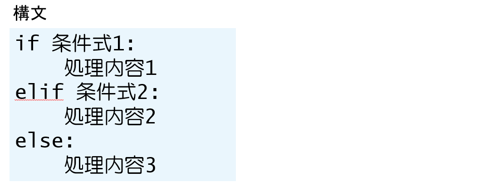

8.4. 第3章 条件分岐と繰り返し¶
一歩前に進むための準備
ファイルに保存したプログラムコードの実行¶
プログラムコードをファイルに保存して実行する利点
一度作成したプログラムコードを繰り返し実行できる
後から一部分だけ修正できる
プログラムコードを配布できる
大きなプログラムを作成できる
作成するファイル
テキストファイル
文字コード：UTF-8
拡張子：.py
プログラムコードを記述したファイルの作成
Visual Studio Code
※ 文字コードの種類:
文字コードとは、コンピュータが文字を認識・処理するために、各文字に割り当てられた固有の番号のことです。これにより、コンピュータは数値として文字を扱うことができます。
多くの文字コードが存在し、ASCII、Shift_JIS、EUC-JP、Unicode (UTF-8, UTF-16など) などがあります
MacとLinuxではUTF-8が多く利用されてます。 Windowsでは、Shift_JISが使われれることがありますが、現在ではUTF-8を使うことが多くなってます。
代表例:
ASCII:
英語圏で使用される文字コードで、1バイトで1文字を表現します。Shift_JIS:
日本語の文字コードで、半角カタカナや全角文字を表現するために、1バイトまたは2バイトを使用します。UTF-8:
Unicodeを表現するための文字エンコーディング方式で、世界中の文字を表現できます。Unicode:
世界中の文字を統一的に扱うための文字コード規格で、UTF-8などのエンコーディング方式で表現されます。
まとめ:
文字コードは、コンピュータが文字を扱うための基礎となる重要な仕組みです。異なる文字コードを理解し、適切に選択・使用することで、文字化けなどの問題を回避し、円滑な情報伝達を可能にします。
コメント文¶
# 記号に続けてコメント（メモ）を記述できる。
# 記号の後ろはプログラムに影響を与えない
# 高さ
hright = 2.0
# 幅
width = 3.0
# 面積(高さx幅)を計算して出力する
print(f'面積は{hright * width}です')
※ プログラムコードの一部を一時的に無効にする用途でも使用できる
インデントとブロック¶
インデント
行頭から最初の文字までの空白
空白文字4つ分を1つの単位とする
ブロック インデントによってプログラムコードを1つのまとまりにしたもの
条件分岐と論理演算子¶
if文による条件分岐¶
「もしも○○ならばXXを実行する」
条件を満たすとき（条件式の値が真（True）のとき）処理内容が実行される。
そうでないときは、実行されない。
if文による条件分岐¶
age = xxxx <----int型の年齢を入れる
if age < 18:
print('まだ選挙権はありません')
if文による条件分岐¶
if age < 18:
print('まだ選挙権はありません')
print('18歳になったら投票にいきましょう')
print('処理を終わります')
条件式と関係演算子¶
if age == 18:
print('18歳ですね。投票にいけますよ。')
if～else文による条件分岐¶
「もしも○○ならば××を実行し、そうでなければ△△を実行する」
条件を満たすとき（条件式の値が真（True）のとき）
処理内容1が実行される。
そうでないときは、
処理内容2が実行される。
if～else文による条件分岐¶
age = xxxx <----int型の年齢を入れる
if age < 18:
print('まだ選挙権はありません') <--- age < 18 がTrueのときに実行される
else:
print('投票にいきましょう') <--- age < 18 がFalseのときに実行される
if～elif～else文による条件分岐¶

条件式1 が True のとき 処理内容1 が実行される。
そうでないとき、条件式2 が True のとき 処理内容2 が実行される。
それ以外の時には、処理内容2が実行される
if～elif～else文による条件分岐¶
age = xxxx <----int型の年齢を入れる
if age < 4:
print('入場料は無料です')
elif age < 13:
print('子供料金で入場できます')
else:
print('大人料金が必要です')
三項演算子¶
条件式 が True のとき、値1 になる。
そうでないとき、値2 になる
C = a if a < b else b
ｃの値は a になる（もし a > b なら）。そうでなけば b
※ 英語の文章のようにして左から順番に読んでいくとわかりやすい
論理演算子による条件の組み合わせ¶
「変数aが10で、かつ変数bが5である」
a == and b == 5
「変数aが10である、または変数bが5である」
a == or b == 5
論理演算子¶
論理演算子による条件の組み合わせ¶
age = xxxx <----int型の年齢を入れる
if age < 13 or age >= 65:
print('入場料は無料です')
else:
print('大人料金が必要です')
演算子の優先度とカッコ¶
優先順位の高い演算から実行さっる
a + 10 > b * 5
↓
(a + 10) > (b * 5)
a + 10 and b * 5
↓
(a + 10) and (b * 5)
比較演算子の連結¶
(a > 5) and (a < 10)
↓
5 < a < 10
※ 左から順番に評価される
（5 < a が評価されてから a < 10 が評価される）
if文と真偽値¶
if a == True: <---- aの値をTrueと比較
処理内容
↓
if a: <---- 条件式の代わりに変数aの値を用います
処理内容
※ a が True のときだけ処理内容が実行される
if not a:
処理内容
※ a が False のときだけ処理内容が実行される
処理の繰り返し¶
while文による処理の繰り返し¶
※ 条件式の値が True の間、処理内容を繰り返す
i = 0
while i < 5:
print('こんにちは。')
i += 1
実行結果
こんにちは。
こんにちは。
こんにちは。
こんにちは。
こんにちは。
処理の流れ¶
i = 0
while i < 5:
print('こんにちは。')
i += 1
while文の例¶
i = 20
while i > 0: <---- 変数iの値が0より大きければ次のブロックの処理を繰り返す
print(i) <---- 変数iの値を出力
i -= 5 <---- 変数iの値を5だけ減らす
実行結果
20 <---- 20から5ずつ小さくなる値が出力される
15
10
5
for文による処理の繰り返し¶
※「反復可能オブジェクト」から1つずつ要素をとりだして「変数」に代入。処理内容を繰り返す。
for i in [10, 20, 30, 40, 50]:
print(i)
実行結果
10
20
30
40
50
for 文の処理の流れ¶
for i in [10, 20, 30, 40, 50]:
print(i)
rangeオブジェクト¶
for i in range(10):
print(i)
実行結果
0 <---- 0から9の値が1ずつ順番に出力される
1
2
3
: (略)
9
rangeオブジェクト¶
list(range(10)) <---- 0から9までの数字
[0, 1, 2, 3, 4, 5, 6, 7, 8, 9]
list(range(3, 10)) <---- 3から9までの数字
[3, 4, 5, 6, 7, 8, 9]
list(range(1, 30, 10))
[1, 11, 21] <---- 29を超えない範囲で1から10ずつ値が増える
100から始まり5ずつ増える値が、200に達するまで(201未満)に順番に代入される
for i in range(100, 201, 5):
print(i)
実行結果
100
105
110
: (略)
200
ループ処理の流れの変更¶
break ループの処理を中断する
total = 0
for i in range(10):
total += i
if total > 20:
break <---- 処理中断
print(i, total)
ループ処理の流れの変更¶
continue ループ内の処理をスキップする
total = 0
for i in range(10):
if i % 3 == 0:
continue <---- 処理スキップ
print(i)
total += i
print('合計は', total)
実行結果
1
2
4
5
7
8
合計は 27
ループ処理のネスト¶
for a in range(1, 4):
print('a=', a)
for b in range(1, 4): <---- forループの中にfor文がある
print(' b=', b)
実行結果
a= 1
b= 1
b= 2
b= 3
a= 2
b= 1
b= 2
b= 3
a= 3
b= 1
b= 2
b= 3
練習問題¶
問題 1¶
次の条件を、関係演算子を使って記述してください。
問題例 aはbより大きい
解答例 a > b
（1） aはbと等しい
（2） aはbと等しくない
（3） bはcより小さい
（4） aはb以下である
（5） cはb以上である
問題 1（解答）¶
次の条件を、関係演算子を使って記述してください。
問題例 aはbより大きい
解答例 a > b
（1） aはbと等しい a == b
（2） aはbと等しくない a != b
（3） bはcより小さい b < c
（4） aはb以下である a <= b
（5） cはb以上である c >= b
問題 2¶
次のプログラムコードにある空欄を埋めて、変数aの値が3で割り切れるときには「3で割り切れます」、そうでないときには「3で割り切れません」と出力するプログラムを完成させてください。
a = 2021
問題 2（解答）¶
次のプログラムコードにある空欄を埋めて、変数aの値が3で割り切れるときには「3で割り切れます」、そうでないときには「3で割り切れません」と出力するプログラムを完成させてください。
a = 2021
if a % 3 == 0:
print('3で割り切れます')
else:
print('3で割り切れません')
問題 3-1¶
10から20までの整数を順番に足し合わせて、その結果を出力するプログラムを作ってください。 ただし、while文を使った場合とfor文を使った場合の2つのプログラムコードを作成してください。
問題 3-1（解答）¶
10から20までの整数を順番に足し合わせて、その結果を出力するプログラムを作ってください。 ただし、while文を使った場合とfor文を使った場合の2つのプログラムコードを作成してください。
while 文
total = 0
i = 10
while i < 21:
total += i
i += 1
print(total)
for 文
total = 0
for i in range(10, 21):
total += i
print(total)
問題 3-2¶
問題3-1で作成したfor文を使ったプログラムコードに対して、15だけは足し合わせしないように、変更してください。ただし、continue 命令を使ってください。
for 文
total = 0
for i in range(10, 21):
total += i
print(total)
問題 3-2（解答）¶
問題3-1で作成したfor文を使ったプログラムコードに対して、15だけは足し合わせしないように、変更してください。ただし、continue 命令を使ってください。
for 文
total = 0
for i in range(10, 21):
if i == 15:
continue
total += i
print(total)
問題 4¶
次の条件を、論理演算子と関係演算子を使って記述してください。
（1） aは5または8と等しい
（2） aとcは両方ともb以下
（3） aは1より大きくて10より小さいが、5ではない
（4） aはbまたはcと等しいが、aとdは等しくない
問題 4 （解答）¶
次の条件を、論理演算子と関係演算子を使って記述してください。
（1） aは5または8と等しい
a == 5 or a == 8
（2） aとcは両方ともb以下
a <= b and c <= b
（3） aは1より大きくて10より小さいが、5ではない
a > 1 and a < 10 and a != 5
（4） aはbまたはcと等しいが、aとdは等しくない
(a == b or a == c) and a != d
問題 5¶
次に示すものは、scoresという変数名のリストに格納されている要素のうち、値が60より大きいものの数をカウントするプログラムコードです。プログラムを完成させてください。
scores = [65, 80, 40, 92, 76, 52]
count = 0 # 値が60よりも大きな要素の数
for i in scores:
print(count) # 結果を出力
問題 5（解答）¶
次に示すものは、scoresという変数名のリストに格納されている要素のうち、値が60より大きいものの数をカウントするプログラムコードです。プログラムを完成させてください。
scores = [65, 80, 40, 92, 76, 52]
count = 0 # 値が60よりも大きな要素の数
for i in scores:
if i > 60:
count += 1
print(count) # 結果を出力